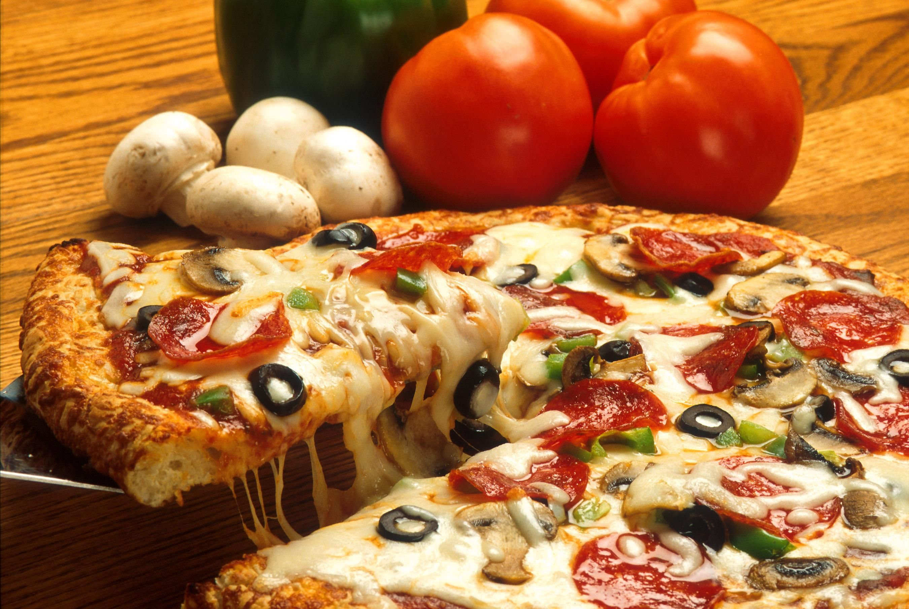

PIZZA:

Description
A crispy, chewy pizza with a rich tomato base, melty mozzarella, and your favorite toppings — made from scratch.
Ingredients
- 3 cups all-purpose flour (or bread flour)
- 1 cups warm water (40°C / 105°F)
- 2 teaspoons active dry yeast
- 1 teaspoons sugar
- 1 teaspoons salt
- 2 tablespoons olive oil
- 400 grams crushed canned tomatoes
- 3 garlic cloves, minced
- 1 teaspoons dried oregano
- 6 fresh basil leaves
- 1 tablespoons olive oil (for sauce)
- 0.5 teaspoons salt and black pepper
- 250 grams fresh mozzarella, sliced or torn
- 30 grams parmesan, finely grated
- 150 grams toppings of choice (pepperoni, olives, mushrooms, bell peppers)
Steps
-
Mix 2 teaspoons active dry yeast and 1 teaspoons sugar into 1 cups warm water (40°C / 105°F).
Stir briefly and let sit until foamy. This confirms the yeast is alive and active.
-
In a large bowl, combine 3 cups all-purpose flour (or bread flour) and 1 teaspoons salt. Pour in the yeast mixture and 2 tablespoons olive oil.
Mix until a shaggy dough forms, then knead on a floured surface for 8-10 minutes until smooth and elastic.
-
Place the dough in a lightly oiled bowl, cover with cling film or a damp cloth, and let rise in a warm place until doubled in size.
-
Gently warm 1 tablespoons olive oil (for sauce) in a saucepan over medium heat.
Add 3 garlic cloves, minced and cook for 15 minutes until fragrant. Add 400 grams crushed canned tomatoes,
1 teaspoons dried oregano, and 0.5 teaspoons salt and black pepper. Simmer until slightly thickened, then set aside to cool.
-
Place a baking tray or pizza stone in the oven and preheat to as high as your oven goes — ideally 250°C / 480°F.
A screaming hot oven is the secret to a great crust.
-
Punch down the risen dough and divide into 2 balls. On a floured surface, stretch and press each ball into a thin round,
about 30 cm (12 inches) in diameter. Use your hands, not a rolling pin — it gives a better, airier texture.
-
Transfer the shaped dough to a floured peel or baking paper. Spread a thin layer of tomato sauce leaving a 2 cm border.
Add 250 grams fresh mozzarella, sliced or torn, 30 grams parmesan, finely grated, 150 grams toppings of
choice (pepperoni, olives, mushrooms, bell peppers), and a few leaves of 6 fresh basil leaves.
-
Slide the pizza onto the preheated stone or tray. Bake until the crust is golden and puffed and the cheese is bubbling and lightly
charred in spots.
-
Remove from the oven and let rest for 2 minutes before slicing. Drizzle with a little olive oil and add fresh basil if desired. Serve immediately.
Enjoy making Pizza!
Home